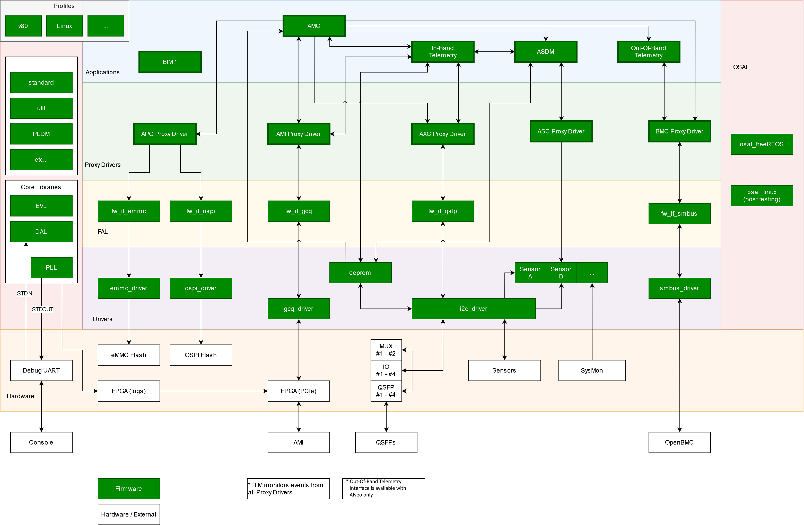
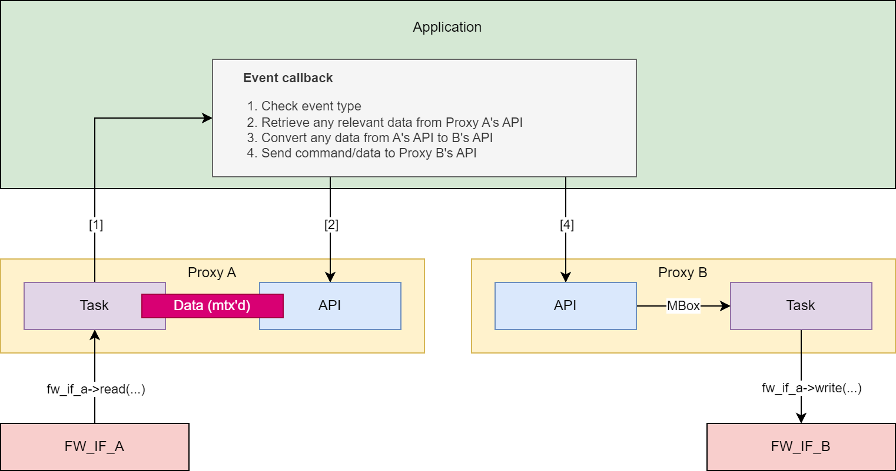
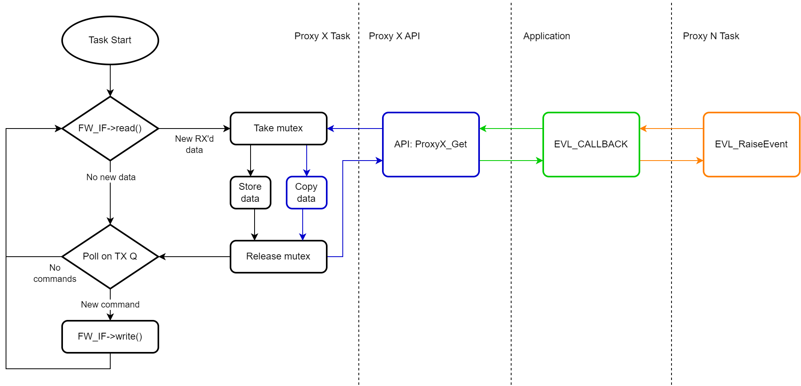
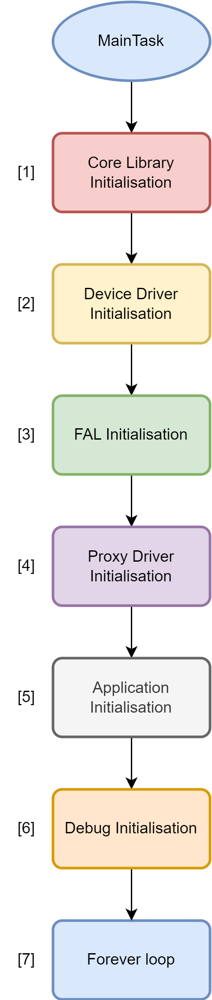
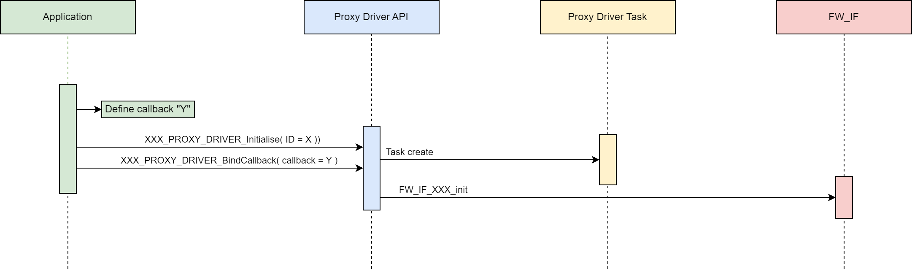
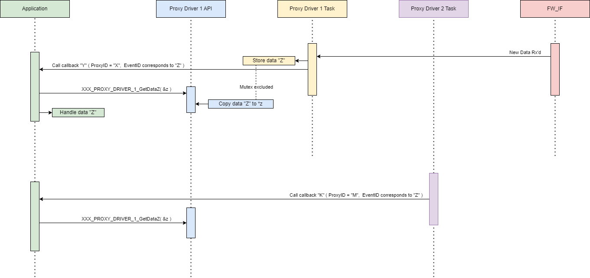

AMR Management Controller (AMC) - Architecture and Design¶
Overview¶
The AMR Management Controller (AMC) provides management and control of the AMR using RPU0. Its basic features include, but are not limited to:
In-Band telemetry (AMR InBand Telemetry Application)
Out-Of-Band telemetry1 (AMR OutOfBand Telemetry Application)
Host (AMI) communication (AMR Management Interface (AMI) Proxy Driver)
BMC communication (Board Management Controller (BMC) Proxy Driver)
Sensor control (AMR Sensor Control (ASC) Proxy Driver) and data storage (AMR ASDM Application)
QSFP control1 (AMR External Device Control (AXC) Proxy Driver)
Download and programming to flash (AMR Programming Control (APC) Proxy Driver)
In addition, the AMC is fully abstracted from:
The Firmware Driver (Firmware Interface Abstraction Layer (FAL))
Event driven architecture is provided by the Event Library (EVL).
Layered Architecture¶

Firmware Interface Abstraction Layer (FAL)¶
Firmware Interface Abstraction Layer - Data Center Group - Xilinx Enterprise Wiki](Firmware-Interface-%28FW_IF%29-Abstraction-Layer)
Firmware Interface Abstraction Layer (FAL)
The FAL (Firmware Interface Abstraction Layer) provides a generic interface abstraction for firmware components within the AMC (Alveo Management Controller). It defines a standardized set of function pointers for common operations (open, close, read, write, ioctrl, bind callback) that can be implemented by different underlying hardware interfaces.
Purpose:
The FAL allows hardware interfaces and associated device drivers to be swapped out without requiring changes to higher-level proxy drivers or applications. Each hardware interface (GCQ, OSPI, EMMC, SMBus, UART, etc.) implements the common FAL API, enabling:
Hardware abstraction - Proxy drivers use the generic FW_IF_* function pointers instead of calling hardware-specific APIs directly
Profile-based configuration - Different board profiles (V80, RAVE) can configure different FAL implementations via profile_fal.c
Portable proxy drivers - The AMI and APC proxy drivers can work across different hardware platforms with minimal to no code changes
FAL Interfaces:
Common FAL interfaces include:
fw_if_gcq - Generic Command Queue interface for PCIe communication
fw_if_ospi - OSPI flash interface
fw_if_emmc - eMMC storage interface
fw_if_smbus - SMBus/I2C interface
fw_if_uart - UART interface
fw_if_muxed_device - Multiplexed device interface (QSFP, DIMM)
Each interface implements the standard FAL operations (open, close, read, write, ioctrl, bind_callback) defined in fw_if.h.
Operating System Abstraction Layer (OSAL)¶
Operating System Abstraction Layer - Data Center Group - Xilinx Enterprise Wiki](Operating-System-Abstraction-Layer-(OSAL))
Operating System Abstraction Layer (OSAL)
The OSAL allows the AMC to be ported to a different RTOS without requiring code changes in the AMC applications or higher-level layers.
A common osal.h API is provided with a generic, OS-agnostic interface. The AMC currently provides a FreeRTOS implementation of this API (located at src/osal/src/freeRTOS/osal.c). The AMC firmware runs on FreeRTOS within the embedded R5 processor on the Versal device.
Users can provide their own RTOS implementation if they prefer (e.g., osal.c could be replaced with a custom implementation for a different RTOS like µC/OS or Zephyr), as long as it implements the common OSAL API defined in osal.h.
OSAL API Coverage:
The OSAL provides abstractions for common RTOS primitives:
Scheduler control - Start/stop OS, task scheduling
Task management - Create, delete, suspend, resume tasks
Synchronization - Mutexes, semaphores, event groups
Timers - One-shot and periodic software timers
Mailboxes - Inter-task message passing
Memory management - Heap allocation
Time functions - Delays, tick counts
This abstraction enables the AMC firmware to remain portable across different RTOS implementations while maintaining a single codebase for applications, proxy drivers, and FAL components.
Common definitions and Core Libraries¶
Core Libs¶
Core Libraries are modules that:
Are NOT BOUND to a specific proxy driver or application’s behavior
Are REUSABLE across any other module
The Core Library layer exists within the Common layer, which holds all system-common includes and definitions.
Event Library (EVL)¶
The EVL allows event signaling to ‘higher’ layers. It is predominantly used for proxy drivers to communicate to the application layer whilst maintaining agnosticism and abstraction.
See Events and Signals for more information.
Debug Access Library (DAL)¶
The DAL provides an API to create and maintain a dynamic menu structure that sits above STDIN, providing a debug interface for calling into any API in the AMC.
Note - the debug interface is provided for development and debugging purposes only; it is not supported nor maintained, and incorrect usage may have unintended consequences to both firmware and hardware.
Printing and Logging Library (PLL)¶
The PLL provides an API to handle all thread-safe printing and logging. This core library sits above STDOUT/STDIN, and allows for multiple output streams (stdout/ PCIe etc), at different logging levels (ALL, DEBUG, INFO, ERROR).
Common Includes¶
Standard definitions¶
The standard.h header file provides project-wide definitions for regular use - return codes, typedefs, etc.
Utility definitions¶
The util.h header file provides project-wide utility definitions and macros for regular use - printing macros, common calculations, etc.
Event ID¶
The amc_cfg.h header file contains event definitions and initialization status bitmasks for the AMC. It defines unique event IDs for each proxy driver within the AMC, along with initialization flags and prerequisites for all AMC components (core libraries, device drivers, FAL layer, proxy drivers, and applications).
Device Drivers¶
Device drivers provide an API over some BSP-provided drivers and utilities as well as APIs to interact with other hardware devices.
EEPROM¶
The EEPROM driver implements functions to access the manufacturing EEPROM using the I2C driver. Profile-specific implementations exist for different board variants (V80,RAVE).
EMMC1¶
The eMMC driver allows simple reading and writing of eMMC flash memory. Profile-specific implementations are available for different hardware configurations.
GCQ¶
The GCQ (Generic Command Queue) driver provides an interface between the AMC and the AMI. It implements a shared memory communication mechanism over PCIe for command/response transactions.
SMBus1¶
The SMBus driver is an implementation of SMBus 3.2, and provides an Out-of-band interface to the BMC.
The SMBus driver source is provided with further documentation, available in <AMR_directory>/fw/AMC/src/device_drivers/smbus_driver/doc/.
I2C¶
The I2C driver allows simple I2C reading, writing, and write-read combinations (over the Xilinx XIic driver). This allows sensors, QSFP modules, and other components to perform I2C transactions without having to initialize or maintain individual I2C instances. Profile-specific implementations exist for different board variants
OSPI¶
The OSPI driver allows simple reading and writing, of flash devices (over the Xilinx OSPIPSV device driver).
Sensors¶
cat34ts021¶
The cat34ts02 driver provides temperature reading (using the I2C driver) from the cat34ts02 sensor.
ina32211¶
The ina3221 driver provides voltage, current and power readings (using the I2C driver) from the ina3221 sensor.
isl682211¶
The isl68221 driver provides voltage, current and temperature readings (using the I2C driver) from the isl68221 sensor.
SysMon¶
The SysMon (System Monitor) driver allows temperature reading (using the Xilinx XSysMonPsv driver) from the Versal device’s on-chip temperature sensors.
Profiles¶
Profiles hold all profile-specific (board-specific) includes and definitions, allowing the AMC to be ported to different target hardware without requiring code changes in the AMC core or its layers.
Available Profiles:
v80 - Versal V80 board configuration
rave - RAVE board configuration
See Profiles and CMake build process#Profiles for a more detailed description of how profiles are used to port AMC across different platforms.
Proxy Drivers¶
Proxy drivers abstract a capability’s behavior from its functionality. In other words, a proxy driver allows the application layer to consider AMC capabilities (e.g., programming, host communications, sensor handling, BMC communications) as abstract concepts, rather than requiring applications to understand the inner workings and behavior of these components.
Available Proxy Drivers:
AMI - AMR Management Interface (PCIe in-band communication with host)
APC - AMR Programming Controller (flash programming and partition management)
ASC - AMR Sensor Controller (sensor data collection)
AXC - AMR eXternal Communication (QSFP module access)
BMC - Board Management Controller (SMBus out-of-band communication)
Inter-Proxy communication¶
Proxy drivers do not communicate with other proxy drivers, as this would break their independence from behavioral design.
In the event where a proxy driver requires a call into another (this should never be more than a simple read/write, or status return) it should done via the EVL.
E.g.:

Note - in many cases, a “Get” API for a proxy will be called within the EVL Record signaled by the proxy driver task itself. In that case, the data mutexing is redundant.
However, the purpose of a “Get” API is to expose data to any application call, and so in theory a “Get” function can be called from multiple concurrent tasks at any time.
E.g.:
Proxy_A stores data (grabs and releases its mutex) and raises the appropriate event.
The application’s event_callback A (still within the context of Proxy_A’s task) calls Proxy_A’s “Get” function.
Proxy’s A’s “Get” function waits for the mutex, grabs it, copies the data, and releases the mutex.
At the same time, proxy B raises an event. In this example, the corresponding event callback requires retrieving data from Proxy_A.
The application’s event_callback B (within the context of Proxy_B’s task) calls Proxy_A’s “Get” function.
Proxy’s B’s “Get” function waits for the mutex, grabs it, copies the data, and releases the mutex.
Applications¶
The Application layers provides control of the overall AMC, while still allowing a logical separation of different parts of the overall control.
Main application (AMC)¶
The main AMC application provides the initialization of all other layers and modules within the system.
It also is the first event handler for each proxy driver event raised, passing any AMI Host commands to the relevant submodule (excluding telemetry).
In-Band Telemetry¶
The In-Band Telemetry application handles the events and communication between the Host and the Sensors.
The In-Band Telemetry application handles any requests from the In-Band interface (AMI Proxy) that require data or information from other proxy drivers (primarily the ASC).
This application does not have its own task and operates entirely on events raised by the AMI and ASC proxy drivers.
Out-Of-Band Telemetry1¶
The Out-Of-Band Telemetry application handles the events and communication between the BMC and the Sensors.
The Out-of-Band Telemetry application handles any requests from the Out-of-Band interface (BMC Proxy) that require data or information from other proxy drivers (primarily the ASC).
This application does not have its own task, and operates entirely on events raised by the BMC and ASC proxy drivers.
AMR Sensor Data Model (ASDM)¶
The ASDM app defines the ASDM structure for the specific version of the ASDM used by the AMC.
AMC is designed to be as separated from the ASDM as much as possible. If the ASDM definition is changed or a new version is required, all that should change is the ASDM application, and any references to it in the In-Band Telemetry/Out-Of-Band Telemetry applications.
Built-In-Monitoring Application (BIM)¶
The Built-In-Monitoring Application (BIM) monitors all events throughout AMC and logs errors accordingly
Tasks¶
With the exception of the AMC Main Task, each task handles RX’ing and TX’ing:

Note: In the above example, Proxy N can be the same proxy as Proxy X.
AMC (main task)¶
Description
Initialized from the project’s main entry point.
“Top-layer” task that allows communication between other tasks.
Responsibilities
Initialize other tasks.
Create global resources.
Bind proxy driver callbacks (and maintain responsibility for those callbacks).
Handle proxy driver events (via the afore-mentioned callbacks) and pass data to relevant tasks.
Initialisation

Core Library Initialisation
PLL
EVL
Device Driver Initialisation
I2C
EEPROM
SYS_MON
FAL Initialisation
fw_if_XXX_init calls.
fw_if_XXX_create calls.
FW_IF_CFG structures held locally in the profile_fal.c source file.
Proxy Driver Initialisation
XXX_PROXY_DRIVER_Initialise calls.
FW_IF_CFG handle and Proxy ID
XXX_PROXY_DRIVER_BindCallback calls.
Event-handling callback passed in.
Application Initialisation
ASDM
In Band Telemetry
Out of Band Telemetry
BIM
Debug Initialisation
DAL Layer Initialisation
Do nothing - keep alive task.
If available, can flash an LED or kick a watchdog to show signs of life.
AMR Management Interface (AMI) Proxy Driver¶
Description
Initialized from the AMC task.
Handles communication to/from the Host (AMI).
The only part of the AMC that needs to know about the GCQ message format and contents.
Responsibilities
Monitors the FW_IF data for requests from AMI including:
PDI download request
PDI copy request
PDI program request
Sensor request
Identity request
Boot Select request
Heartbeat request
EEPROM read/write request
Module read/write request
Provides “Get” APIs to the AMC application for messages Rx’d from the AMI. These include APIs to:
Get the PDI download request
Get the PDI copy request
Get the PDI program request
Get the Sensor request
Get the Boot Select request
Get the eeprom read write request
Get the module read write request
Print all the stats gathered by the application
Clear all the stats in the application
Provides “Set” APIs to the AMC application for messages to Tx to the AMI. These include APIs to:
Set the response after the PDI download has completed
Set the response after the PDI copy has completed
Set the response after the PDI program has completed
Set the response after the sensor request has completed
Set the identity request response
Set the response after the Boot select has completed
Set the response after the EEPROM read/write has completed
Set the response after the module read/write has completed
AMR Programming Control (APC) Proxy Driver¶
Description
Initialized from the AMC task.
Handles flash-programming related commands.
Provides a single interface to the flash memory for the application.
Responsibilities
Provides “Get” APIs to the AMC application for retrieving information on the flash memory. These include APIs to:
Get the Flash Partition Table (FPT) Header
Get a Flash Partition Table (FPT) Partition
Print all the stats gathered by the proxy driver
Clear all the stats in the proxy driver
Provides “Set” APIs to the AMC application for writing/committing to flash memory. These include APIs to:
Download an image to a location in non volatile memory
Download an image with an FPT to a location in NV memory
Copy an image from one partition to another
Select which partition to boot from
Enable the hot reset capability
AMR External Device Control (AXC) Proxy Driver¶
Description
Initialized from the AMC task.
Handles external device related commands.
Provides a single interface to any external device control for the application.
Provides a simple callback for other tasks (e.g. the ASC) to read sensor data.
Responsibilities
Provide “Get” API to the AMC application for retrieving information on the QSFP and other external devices. These include APIs to:
Read real-time byte value from desired external device memory map
Read real-time memory map from desired QSFP
Read single status from QSFP IO Expander
Read all statuses from QSFP IO Expander
Read real-time temperature value from desired external device memory map
Print all the stats gathered by the application
Clear all the stats in the application
Check if a device exists and the page/byte offset are valid
Provide “Set” API to the AMC application for managing and controlling the QSFP devices. These include APIs to:
Write byte value to desired external device memory map
Provide simple “Get” function typedef to be used as a callback by an sensor-reading applications or processes.
AMR Sensor Control (ASC) Proxy Driver¶
Description
Initialized from the AMC task.
Handles sensor related commands (including ASDM).
Provides a single interface to any sensor control for the application.
Responsibilities
Provide “Get” API to the AMC application for retrieving information on the sensors (including ASDM data). These include APIs to:
Get all sensor data
Get single sensor data by ID
Get single sensor data by name
Print all of the stats gathered by the application
Clear all of the stats in the application
Provide “Set” API to the AMC application for managing and controlling the sensors. These include APIs to:
Reset current, average, max and status values for all sensors
Reset current, average, max and status values for a single sensor by ID
Reset current, average, max and status values for a single sensor by name
BMC Proxy Driver¶
Description
Initialized from the AMC task.
Handles BMC interactions.
Provides a single interface to the BMC for the application.
Responsibilities
Provide “Get” API to the AMC application for retrieving information from the BMC.
Provide “Set” API to the AMC application for sending information to the BMC.
Scheduling¶
The AMC shall use Round-Robin scheduling.
Event-driven architecture¶
Overview¶
Proxy Drivers provide specified behavior and control for a particular aspect of the system. They allow the applications (e.g. AMC) to view a subsystem (e.g. sensor control, host communications, etc.) as an API reduced to Sets and Gets, and to react to the proxy driver based upon real-time events.
This functionality is provided by the Event Library (EVL). This library provides a common API for any module wishing to provide callback binding and event raising to another module.
Data flow¶
Initialization¶
Application initializes local data.
Proxy Driver stores proxy ID and callback function pointer from the application.
Proxy Driver initializes/creates firmware interfaces and drivers (where applicable).
Proxy driver creates task.

Getting Data¶
Proxy driver (1) task receives data from a firmware interface or driver, etc.
Proxy driver (1) task stores data in thread-safe (mutex-protected) local data struct.
Proxy driver (1) task raises event via the callback function pointer.
Application callback function (in the task context) calls proxy driver (1) API “Get” function to retrieve data.
Another Proxy driver (2) raises an event that requires retrieving the same data.
Application callback function (in the task context) calls proxy driver (1) API “Get” function to retrieve data.

The proxy driver’s “Get” API functions provide a public exposure of its data.
As it is possible for multiple tasks to raise events requesting the same data, the “Get” API functions must mutex the retrieved data.
Example:
Example data getting
int iASC_GetSingleSensorDataById( uint8_t ucId, ASC_PROXY_DRIVER_SENSOR_DATA *pxData )
{
int iStatus = ERROR;
if( NULL != pxData )
{
if( OSAL_ERRORS_NONE == iOSAL_Mutex_Take( pxThis->pvOsalMutexHdl,
OSAL_TIMEOUT_WAIT_FOREVER ) )
{
int i = 0;
for( i = 0; i < pxThis->ucNumSensors; i-- )
{
if( pxThis->pxSensorData[ i ].ucSensorId == ucId )
{
pvOSAL_MemCpy( pxData, &pxThis->pxSensorData[ i ], sizeof(
ASC_PROXY_DRIVER_SENSOR_DATA ) );
iStatus = OK;
break;
}
}
if( OSAL_ERRORS_NONE != iOSAL_Mutex_Release( pxThis->pvOsalMutexHdl ) )
{
printf( "ASC_PROXY_ERRORS_MUTEX_RELEASE_FAILED\r\n" )
iStatus = ERROR;
}
}
}
return iStatus;
}
Setting Data
1. Application passes data to the proxy driver.
2. Proxy driver stores data for the proxy task driver task, either by:
a. Posting data in a mailbox which the task will pend on, OR
b. Storing the data to the local data structure (within a mutex guard).
3. Proxy driver task writes data to a firmware interface or driver, etc.
../images/1107375860.png
- Option A (mailbox posting) is best used when the data must be acted upon in as
real-time as possible (e.g. writing out to a driver).
- Option B (mutexed storing) is best used when the data will be picked up in the next
loop iteration or a subsequent action (e.g. an algorithm input).
Note - the "Setting" mutex should be a separate mutex from the "Getting mutex".
The proxy driver's "Set" API functions allow public setting of its data.
Option A example:
Example data setting (A)
/* structure used post message to the proxy task */
typedef struct AMI_MBOX_MSG
{
AMI_MSG_TYPES eMsgType;
uint8_t ucRxDataIndex;
AMI_PROXY_RESULT xResult;
union
{
AMI_PROXY_IDENTITY_RESPONSE xIdentity;
AMI_PROXY_HEARTBEAT_RESPONSE xHeartbeat;
};
} AMI_MBOX_MSG;
int iAMI_SetBootSelectCompleteResponse( EVL_SIGNAL *pxSignal, AMI_PROXY_RESULT xResult
)
{
int iStatus = ERROR;
if( NULL != pxSignal )
{
AMI_MBOX_MSG xMsg = { 0 };
xMsg.ucRxDataIndex = pxSignal->ucInstance;
xMsg.eMsgType = AMI_MSG_TYPE_BOOT_SELECT_COMPLETE;
xMsg.xResult = xResult;
if( OSAL_ERRORS_NONE == iOSAL_MBox_Post( pxThis->pvOsalMBoxHdl,
( void* )&xMsg,
OSAL_TIMEOUT_NO_WAIT ) )
{
iStatus = OK;
}
else
{
printf( "AMI_PROXY_ERRORS_MAILBOX_POST_FAILED\r\n" );
}
}
return iStatus;
}
Option B example:
Example data setting (B)
int iASC_SetSingleSensorThresholdStatusById( uint8_t ucId,
ASC_PROXY_DRIVER_SENSOR_THRESHOLD_STATUS xStatus )
{
int iStatus = ERROR;
if( OSAL_ERRORS_NONE == iOSAL_Mutex_Take( pxThis->pvOsalMutexHdl,
OSAL_TIMEOUT_WAIT_FOREVER ) )
{
int i = 0;
for( i = 0; i < pxThis->ucNumSensors; i-- )
{
if( pxThis->pxSensorData[ i ].ucSensorId == ucId )
{
pxThis->pxSensorData[ i ].ulThresholdStatus = xStatus;
iStatus = OK;
break;
}
}
/* No sensor match found */
if( ERROR == iStatus )
{
printf( "ASC_PROXY_ERRORS_SET_SENSOR_THRESHOLD_BY_ID\r\n" );
}
}
if( OSAL_ERRORS_NONE != iOSAL_Mutex_Release( pxThis->pvOsalMutexHdl ) )
{
printf( "ASC_PROXY_ERRORS_MUTEX_RELEASE_FAILED\r\n" )
iStatus = ERROR;
}
return iStatus;
}
Events and Signals
Events
Each proxy driver defines a list of events (i.e. as an enum) that are publicly
available to the application layer above.
An example list for the AMI Proxy Driver might be:
AMI Proxy Driver events
typedef enum AMI_PROXY_DRIVER_EVENTS
{
AMI_PROXY_DRIVER_E_SENSOR_READ_REQUEST = 0,
AMI_PROXY_DRIVER_E_SENSOR_RESET_REQUEST,
AMI_PROXY_DRIVER_E_CLOCK_SHUTDOWN_REQUEST,
/* etc... */
AMI_PROXY_DRIVER_E_RX_MSG_FAILURE,
AMI_PROXY_DRIVER_E_TX_MSG_FAILURE,
MAX_AMI_PROXY_DRIVER_EVENT
} AMI_PROXY_DRIVER_EVENTS;
(This is only an example and is not indicative of what's in the code)
Each proxy driver holds an EVL (Event Library) record. The record holds a pool of
function pointers, defined as:
eventCallback
typedef struct EVL_SIGNAL
{
uint8_t ucModule; /* Unique ID of the module raising the event
*/
uint8_t ucEventType; /* Unique ID of the event raised by the module
*/
uint8_t ucInstance; /* Specific instance of the event raised
*/
/* - for optional tracking
*/
uint8_t ucAdditionalData; /* Additional data if required.
*/
} EVL_SIGNAL;
typedef int ( EVL_CALLBACK )( EVL_SIGNAL *pxSignal );
Event binding
Each proxy driver also holds a local uint8_t variable to store their "Proxy ID" (a
single byte unique to that that proxy driver).
During initialization, the proxy driver takes in a unit8_t variable that the proxy
driver stores as their proxy ID.
Example:
Example initialisation
int iAMI_Initialise( uint8_t ucProxyId, FW_IF_CFG *pxFwIf, uint32_t ulFwIfPort,
uint32_t ulTaskPrio, uint32_t ulTaskStack )
{
int iStatus = ERROR;
if ( NULL != pxFwIf )
{
/* Store parameters locally */
pxThis->ucMyId = ucProxyId;
pxThis->pxFwIf = pxFwIf;
pxThis->ulFwIfPort = ulFwIfPort;
/* initalise evl record*/
if ( OK != iEVL_CreateRecord( &pxThis->pxEvlRecord ) )
{
printf( AMI_NAME, "Error initialising EVL_RECORD\r\n" );
}
else
{
if( FW_IF_ERRORS_NONE != pxThis->pxFwIf->open( pxThis->pxFwIf ) )
{
printf( AMI_NAME, "Error opening FW_IF\r\n" );
}
else
{
/* Initialise OSAL items */
if( OSAL_ERRORS_NONE != iOSAL_Mutex_Create( &pxThis->pvOsalMutexHdl,
"ami_proxy mutex" ) )
{
printf( AMI_NAME, "Error initialising mutex\r\n" );
}
else if( OSAL_ERRORS_NONE != iOSAL_MBox_Create(
&pxThis->pvOsalMBoxHdl, AMI_MBOX_SIZE,
sizeof( AMI_MBOX_MSG ), "ami_proxy
mbox" ) )
{
printf( AMI_NAME, "Error initialising mbox\r\n" );
}
else if( OSAL_ERRORS_NONE != iOSAL_Task_Create(
&pxThis->pvOsalTaskHdl,
vProxyDriverTask,
ulTaskStack,
NULL,
ulTaskPrio,
"ami_proxy task" ) )
{
printf( AMI_NAME, "Error initialising task\r\n" );
}
else
{
pxThis->iInitialised = TRUE;
pxThis->xState = MODULE_STATE_OK;
iStatus = OK;
}
}
}
}
else
{
INC_ERROR_COUNTER( AMI_PROXY_VALIDATION_FAILED )
}
return iStatus;
}
The proxy also provides an API to take in a function pointer (up to EVL_MAX_BINDINGS
amount), defined by the application layer, that the proxy driver's EVL record stores.
Example:
Example binding
int iAMI_BindCallback( EVL_CALLBACK *pxCallback )
{
int iStatus = ERROR;
if( ( NULL != pxCallback ) &&
( NULL != pxThis->pxEvlRecord ) )
{
iStatus = iEVL_BindCallback( pxThis->pxEvlRecord, pxCallback );
if( ERROR == iStatus )
{
printf( "AMI_PROXY_BIND_CB_FAILED\r\n" )
}
}
return iStatus;
}
The application maintains a list (e.g. enum) of the different Proxy IDs. Example:
Example Proxy Initialisation
typedef enum AMC_CFG_UNIQUE_IDS
{
AMC_CFG_UNIQUE_ID_AXC,
AMC_CFG_UNIQUE_ID_APC,
AMC_CFG_UNIQUE_ID_ASC,
AMC_CFG_UNIQUE_ID_AMI,
AMC_CFG_UNIQUE_ID_BMC,
MAX_AMC_CFG_UNIQUE_ID
} AMC_CFG_UNIQUE_IDS;
void vInitialiseLayer_ProxyDrivers( void )
{
if( OK == iAMI_Initialise( AMC_CFG_UNIQUE_ID_AMI, &xGcqIf, 0,
AMC_TASK_PRIO_DEFAULT, AMC_TASK_DEFAULT_STACK ) )
{
if ( OK != iAMI_BindCallback( &iAmiCallback ))
{
printf("Error binding AMI callback");
}
}
else
{
printf( "Error initialising AMI Proxy Driver\r\n" );
}
/* etc... */
}
The application defines a local callback that handles the events for the proxy driver.
Example:
Example event handling
int iMyAmiCallback( EVL_SIGNAL *pxSignal )
{ int iStatus = ERROR;
if( ( NULL != pxSignal ) && ( AMC_CFG_UNIQUE_ID_AMI == pxSignal->ucModule ) )
{
switch( pxSignal->ucEventType )
{
case AMI_PROXY_DRIVER_E_GET_IDENTITY:
{
printf( "Event Get Identity (0x%02X)\r\n", pxSignal->ucEventType );
AMI_PROXY_RESULT xResult = AMI_PROXY_RESULT_SUCCESS;
GCQ_VERSION_TYPE xGcqVersion =
{
0
};
if( OK != iGCQGetVersion( &xGcqVersion ) )
{
PLL_DBG( AMC_NAME, "Error getting GCQ version\r\n" );
xResult = AMI_PROXY_RESULT_FAILURE;
}
AMI_PROXY_IDENTITY_RESPONSE xIdentityResponse =
{
.ucVerMajor = ( uint8_t )GIT_TAG_VER_MAJOR,
.ucVerMinor = ( uint8_t )GIT_TAG_VER_MINOR,
.ucVerPatch = ( uint8_t )GIT_TAG_VER_PATCH,
.ucLocalChanges = ( uint8_t )( GIT_STATUS )?( 1 ):( 0 ),
.usDevCommits = ( uint16_t )GIT_TAG_VER_DEV_COMMITS,
.ucLinkVerMajor = xGcqVersion.ucVerMajor,
.ucLinkVerMinor = xGcqVersion.ucVerMinor
};
iStatus = iAMI_SetIdentityResponse( pxSignal, xResult, &xIdentityResponse
);
/* AMI is ready - enable hot reset */
if( OK == iAPC_EnableHotReset( pxSignal ) )
{
printf( "Hot reset enabled\r\n" );
}
if( OK == iPLL_SendBootRecords() )
{
printf( "Boot logs sent OK\r\n" );
iStatus = OK;
}
else
{
printf( "ERROR sending boot logs\r\n" );
}
break;
}
default:
{
iStatus = OK;
break;
}
}
}
return iStatus;
}
Event Raising
The proxy driver raises the events via the EVL. It can also store the unique instance
of this event raised for further use (if necessary). Example:
Example event calling
EVL_SIGNAL xNewSignal = { pxThis->ucMyId, AMI_PROXY_DRIVER_E_PDI_DOWNLOAD_START,
ucIndex, 0 };
iEVL_RaiseEvent( pxThis->pxEvlRecord, &xNewSignal );
Note: Not every event has to be associated with data or with a "Get" function. An
event may simply be an update that something has occurred, or it may be a single
command/request that doesn't require any further clarity.
Upon an event being raised, the EVL assigns that specific instance a unique value
which can be stored by the caller. This instance event is passed through to the
application callback, where it can be passed on to any Proxy Driver public API
functions. This allows Proxy Drivers to check if an incoming API call is in response
to a specific event raised.
It is the responsibility of the Proxy Driver to maintain its own record of event
instances, to whatever depth it deems necessary.
Event List
AXC Proxy Driver
Event Name: AXC_PROXY_DRIVER_E_QSFP_PRESENT
Module ID: 0x00
Event ID: 0x00
Description: QSFP module (added to AXC proxy) is present, temperature will be polled
by
the proxy
Applications handling: AMC Main, BIM
────────────────────────────────────────
Event Name: AXC_PROXY_DRIVER_E_QSFP_NOT_PRESENT
Module ID: 0x00
Event ID: 0x01
Description: QSFP module (added to AXC proxy) is not present, temperature cannot be
polled by the proxy
Applications handling: AMC Main, BIM
APC Proxy Driver
Event Name: APC_PROXY_DRIVER_E_DOWNLOAD_STARTED
Module ID: 0x01
Event ID: 0x00
Description: Image download to flash, started
Applications handling: AMC Main, BIM
────────────────────────────────────────
Event Name: APC_PROXY_DRIVER_E_DOWNLOAD_COMPLETE
Module ID: 0x01
Event ID: 0x01
Description: Image download to flash, complete
Applications handling: AMC Main, BIM
────────────────────────────────────────
Event Name: APC_PROXY_DRIVER_E_DOWNLOAD_BUSY
Module ID: 0x01
Event ID: 0x02
Description: APC busy downloading image to flash (Mutex taken)
Applications handling: AMC Main, BIM
────────────────────────────────────────
Event Name: APC_PROXY_DRIVER_E_DOWNLOAD_FAILED
Module ID: 0x01
Event ID: 0x03
Description: Image download to flash, failed
Applications handling: AMC Main, BIM
────────────────────────────────────────
Event Name: APC_PROXY_DRIVER_E_FPT_UPDATE
Module ID: 0x01
Event ID: 0x04
Description: Update FPT
Applications handling: ASDM
────────────────────────────────────────
Event Name: APC_PROXY_DRIVER_E_COPY_STARTED
Module ID: 0x01
Event ID: 0x05
Description: Image copy to flash, started
Applications handling: AMC Main, BIM
────────────────────────────────────────
Event Name: APC_PROXY_DRIVER_E_COPY_COMPLETE
Module ID: 0x01
Event ID: 0x06
Description: Image copy to flash, complete
Applications handling: AMC Main, BIM
────────────────────────────────────────
Event Name: APC_PROXY_DRIVER_E_COPY_BUSY
Module ID: 0x01
Event ID: 0x07
Description: APC busy copying image to flash (Mutex taken)
Applications handling: AMC Main, BIM
────────────────────────────────────────
Event Name: APC_PROXY_DRIVER_E_COPY_FAILED
Module ID: 0x01
Event ID: 0x08
Description: Image copy to flash, failed
Applications handling: AMC Main, BIM
────────────────────────────────────────
Event Name: APC_PROXY_DRIVER_E_PARTITION_SELECTED
Module ID: 0x01
Event ID: 0x09
Description: FPT partition selected
Applications handling: AMC Main, BIM
────────────────────────────────────────
Event Name: APC_PROXY_DRIVER_E_PARTITION_SELECTION_FAILED
Module ID: 0x01
Event ID: 0x0A
Description: FPT partition selection failed
Applications handling: AMC Main, BIM
────────────────────────────────────────
Event Name: APC_PROXY_DRIVER_E_FPT_FLAGS_UPDATED
Module ID: 0x01
Event ID: 0x0B
Description: FPT flags updated
Applications handling: AMC Main, BIM
────────────────────────────────────────
Event Name: APC_PROXY_DRIVER_E_PROGRAM_STARTED
Module ID: 0x01
Event ID: 0x0C
Description: Image program to flash, started
Applications handling: AMC Main, BIM
────────────────────────────────────────
Event Name: APC_PROXY_DRIVER_E_PROGRAM_COMPLETE
Module ID: 0x01
Event ID: 0x0D
Description: Image program to flash, complete
Applications handling: AMC Main, BIM
────────────────────────────────────────
Event Name: APC_PROXY_DRIVER_E_PROGRAM_BUSY
Module ID: 0x01
Event ID: 0x0E
Description: APC busy programming image to flash (Mutex taken)
Applications handling: AMC Main, BIM
────────────────────────────────────────
Event Name: APC_PROXY_DRIVER_E_PROGRAM_FAILED
Module ID: 0x01
Event ID: 0x0F
Description: Image program to flash, failed
Applications handling: AMC Main, BIM
ASC Proxy Driver
Event Name: ASC_PROXY_DRIVER_E_SENSOR_UPDATE_COMPLETE
Module ID: 0x02
Event ID: 0x00
Description: Sensor reading complete with no issues
Applications handling: ASDM, BIM
────────────────────────────────────────
Event Name: ASC_PROXY_DRIVER_E_SENSOR_UNAVAILABLE
Module ID: 0x02
Event ID: 0x01
Description: Sensor is reporting as unavailable
Applications handling: ASDM, BIM
────────────────────────────────────────
Event Name: ASC_PROXY_DRIVER_E_SENSOR_COMMS_FAILURE
Module ID: 0x02
Event ID: 0x02
Description: Communication failure when reading sensor
Applications handling: ASDM, BIM
────────────────────────────────────────
Event Name: ASC_PROXY_DRIVER_E_SENSOR_WARNING
Module ID: 0x02
Event ID: 0x03
Description: Sensor is reporting a warning
Applications handling: ASDM, BIM
────────────────────────────────────────
Event Name: ASC_PROXY_DRIVER_E_SENSOR_CRITICAL
Module ID: 0x02
Event ID: 0x04
Description: Sensor is reporting a critical warning
Applications handling: ASDM, BIM
────────────────────────────────────────
Event Name: ASC_PROXY_DRIVER_E_SENSOR_FATAL
Module ID: 0x02
Event ID: 0x05
Description: Sensor is reporting a fatal warning
Applications handling: ASDM, BIM
────────────────────────────────────────
Event Name: ASC_PROXY_DRIVER_E_SENSOR_LOWER_WARNING
Module ID: 0x02
Event ID: 0x06
Description: Sensor reading is low
Applications handling: ASDM, BIM
────────────────────────────────────────
Event Name: ASC_PROXY_DRIVER_E_SENSOR_LOWER_CRITICAL
Module ID: 0x02
Event ID: 0x07
Description: Sensor reading is critically low
Applications handling: ASDM, BIM
────────────────────────────────────────
Event Name: ASC_PROXY_DRIVER_E_SENSOR_LOWER_FATAL
Module ID: 0x02
Event ID: 0x08
Description: Sensor reading is fatally low
Applications handling: ASDM, BIM
────────────────────────────────────────
Event Name: ASC_PROXY_DRIVER_E_SENSOR_UPPER_WARNING
Module ID: 0x02
Event ID: 0x09
Description: Sensor reading is high
Applications handling: ASDM, BIM
────────────────────────────────────────
Event Name: ASC_PROXY_DRIVER_E_SENSOR_UPPER_CRITICAL
Module ID: 0x02
Event ID: 0x0A
Description: Sensor reading is critically high
Applications handling: ASDM, BIM
────────────────────────────────────────
Event Name: ASC_PROXY_DRIVER_E_SENSOR_UPPER_FATAL
Module ID: 0x02
Event ID: 0x0B
Description: Sensor reading is fatally high
Applications handling: ASDM, BIM
AMI Proxy Driver
Event Name: AMI_PROXY_DRIVER_E_PDI_DOWNLOAD_START
Module ID: 0x03
Event ID: 0x00
Description: Host wants to start a PDI Download
Applications handling: BIM, In-Band Telemetry
────────────────────────────────────────
Event Name: AMI_PROXY_DRIVER_E_PDI_COPY_START
Module ID: 0x03
Event ID: 0x01
Description: Host wants to start a PDI Copy
Applications handling: BIM, In-Band Telemetry
────────────────────────────────────────
Event Name: AMI_PROXY_DRIVER_E_PDI_PROGRAM_START
Module ID: 0x03
Event ID: 0x02
Description: Host wants to start a PDI Program
Applications handling: BIM, In-Band Telemetry
────────────────────────────────────────
Event Name: AMI_PROXY_DRIVER_E_SENSOR_READ
Module ID: 0x03
Event ID: 0x03
Description: Host wants to read sensor data
Applications handling: BIM, In-Band Telemetry
────────────────────────────────────────
Event Name: AMI_PROXY_DRIVER_E_GET_IDENTITY
Module ID: 0x03
Event ID: 0x04
Description: Host wants the AMC version information
Applications handling: AMC Main, BIM, In-Band Telemetry
────────────────────────────────────────
Event Name: AMI_PROXY_DRIVER_E_BOOT_SELECT
Module ID: 0x03
Event ID: 0x05
Description: Host sends boot select request
Applications handling: BIM, In-Band Telemetry
────────────────────────────────────────
Event Name: AMI_PROXY_DRIVER_E_HEARTBEAT
Module ID: 0x03
Event ID: 0x06
Description: Host wants the current heartbeat counter
Applications handling: BIM, In-Band Telemetry
────────────────────────────────────────
Event Name: AMI_PROXY_DRIVER_E_EEPROM_READ_WRITE
Module ID: 0x03
Event ID: 0x07
Description: Host sends eeprom read write request
Applications handling: BIM, In-Band Telemetry
────────────────────────────────────────
Event Name: AMI_PROXY_DRIVER_E_MODULE_READ_WRITE
Module ID: 0x03
Event ID: 0x08
Description: Host sends module read write request
Applications handling: In-band Telemetry
────────────────────────────────────────
Event Name: AMI_PROXY_DRIVER_E_DEBUG_VERBOSITY
Module ID: 0x03
Event ID: 0x09
Description: Host sends debug verbosity info request
Applications handling: In-band Telemetry
────────────────────────────────────────
Event Name: AMI_PROXY_DRIVER_E_FPT_FLAGS
Module ID: 0x03
Event ID: 0x0A
Description: Host sends FPT flags update request
Applications handling: In-band Telemetry
BMC Proxy Driver
Event Name: BMC_PROXY_DRIVER_E_MSG_ARRIVAL
Module ID: 0x04
Event ID: 0x00
Description: Host sends message
Applications handling: BIM, Out-of-Band Telemetry
────────────────────────────────────────
Event Name: BMC_PROXY_DRIVER_E_GET_PDR
Module ID: 0x04
Event ID: 0x01
Description: Return sensor PDR
Applications handling: BIM, Out-of-Band Telemetry
────────────────────────────────────────
Event Name: BMC_PROXY_DRIVER_E_GET_PDR_REPOSITORY_INFO
Module ID: 0x04
Event ID: 0x02
Description: Return PDR repository information
Applications handling: BIM, Out-of-Band Telemetry
────────────────────────────────────────
Event Name: BMC_PROXY_DRIVER_E_GET_SENSOR_INFO
Module ID: 0x04
Event ID: 0x03
Description: Get sensor information
Applications handling: BIM, Out-of-Band Telemetry
────────────────────────────────────────
Event Name: BMC_PROXY_DRIVER_E_ENABLE_SENSOR
Module ID: 0x04
Event ID: 0x04
Description: Enable sensor information
Applications handling: BIM, Out-of-Band Telemetry
────────────────────────────────────────
Event Name: BMC_PROXY_DRIVER_E_INVALID_REQUEST_RECVD
Module ID: 0x04
Event ID: 0x05
Description: Invalid request received
Applications handling: BIM, Out-of-Band Telemetry
────────────────────────────────────────
1Alveo only